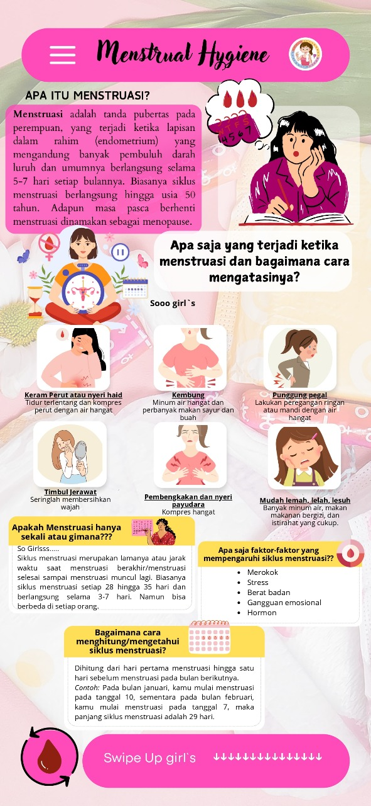
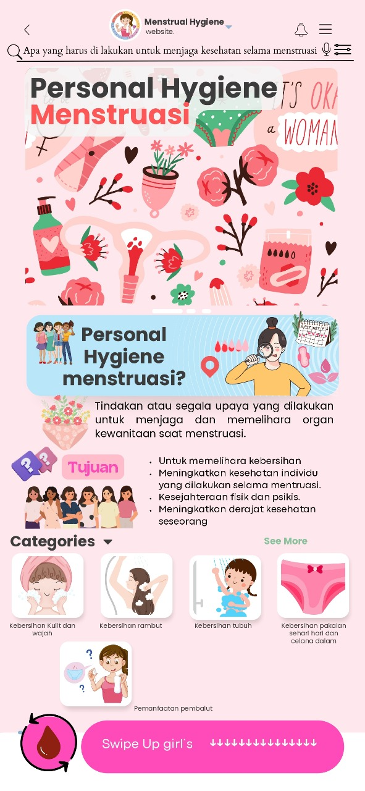

Materi Menstrual Hygiene
Materi Menstrual Hygiene
Menu ini menampilkan materi tentang personal hygiene saat menstruasi yang bertujuan untuk memberikan pemahaman yang mendalam mengenai pentingnya menjaga kebersihan selama periode menstruasi. Hal ini meliputi praktik-praktik yang harus dilakukan untuk menjaga kesehatan dan kenyamanan, serta mencegah infeksi.
Apa itu Menstruasi? dan apa saja yang terjadi saat menstruasi? Yuk, simak materinya, Femioonnim! Baca materi di bawah ini ⬇
Bagaimana menjaga personal hygiene saat Mnenstruasi? Yuk, simak materinya, Femioonnim! Baca materi di bawah ini ⬇
World Menstrual Hygiene Day